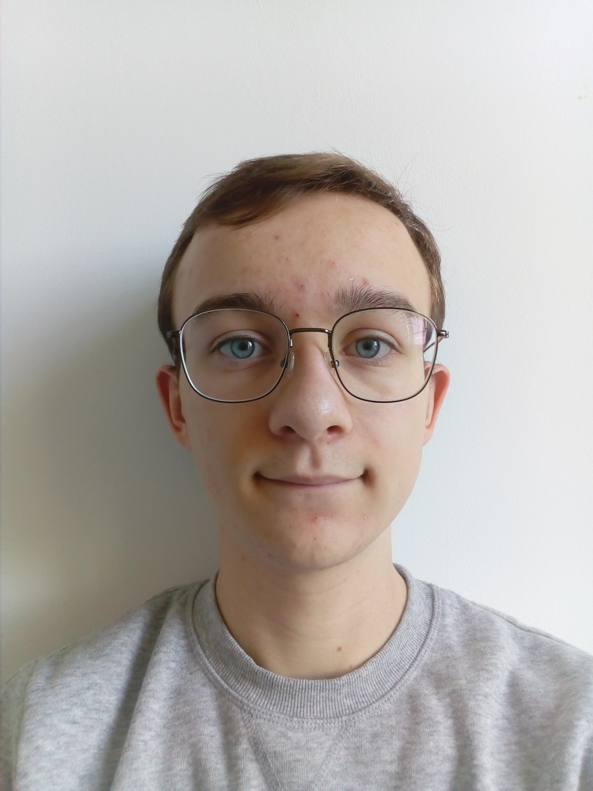

Curiculum Vitae
identité

- nom : Crambes
- prénom : Julien
- âge : 20
- date de naissance : 22/09/2000
cursus
- Filière S option SI, Lycée Général B.Palissy, Saintes
- CPGE MPSI puis MP au lycée Jean Dautet, La Rochelle
- Licence 2 d'info, Université de La Rochelle
diplômes
- BAC S option SI mention Bien passé en 2018
- Brevet d'Initiation à l'Aéronautique (BIA) passé en 2018